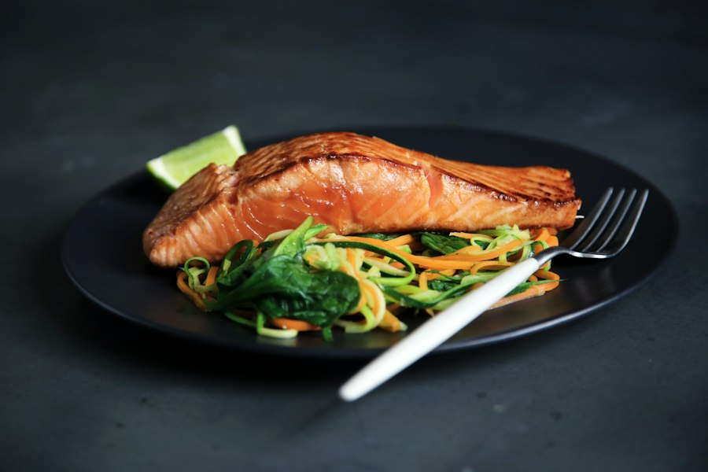
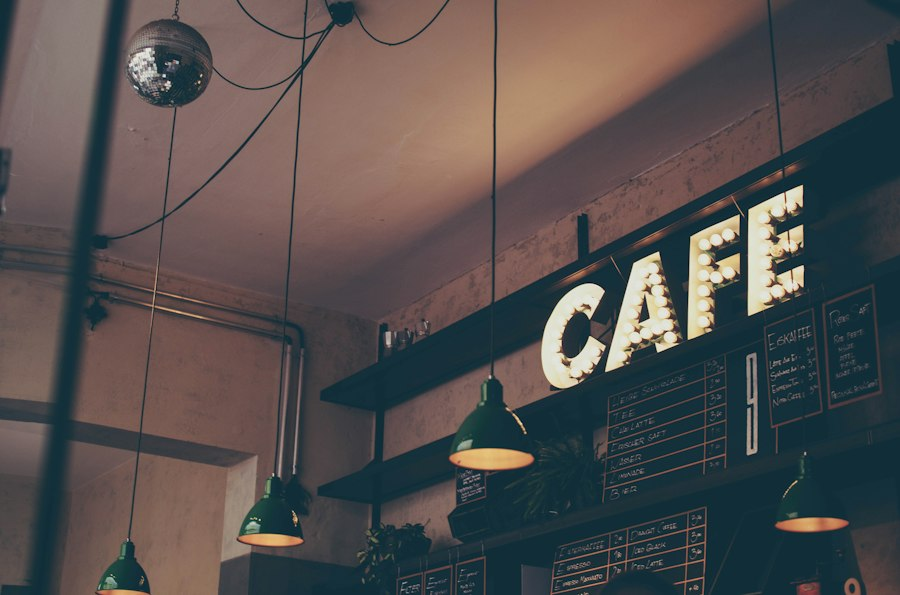
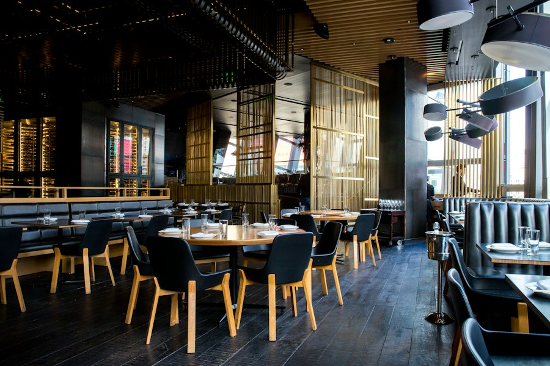

Food Along the Coast
Make time for a good meal between coastal adventures. Explore seafood, cozy cafés, and relaxed places to dine.

Fresh Seafood
Enjoy a coastal favorite, from grilled fish to a bowl of clam chowder. Add a fresh salad for a relaxed lunch.

Local Cafés
Start your morning with coffee and a pastry, or take a break from exploring with a sandwich and a warm drink.

Relaxed Dining
Settle in for a leisurely meal after a day outdoors. Share a few dishes and enjoy time around the table.